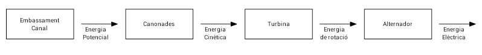
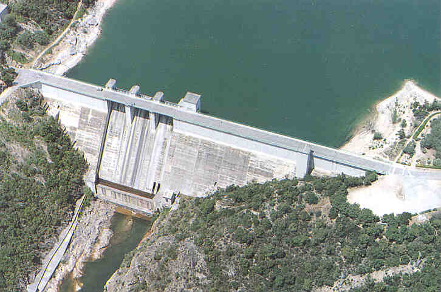
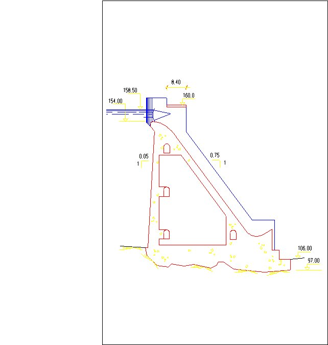
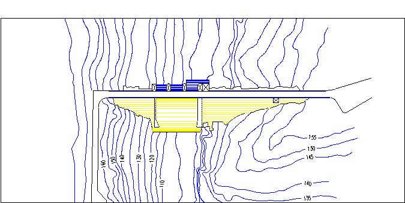
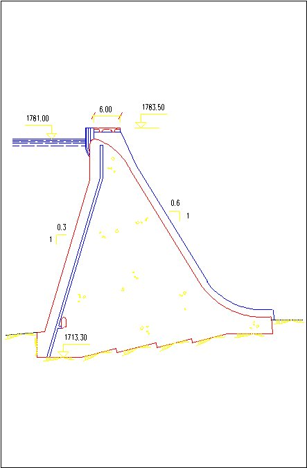
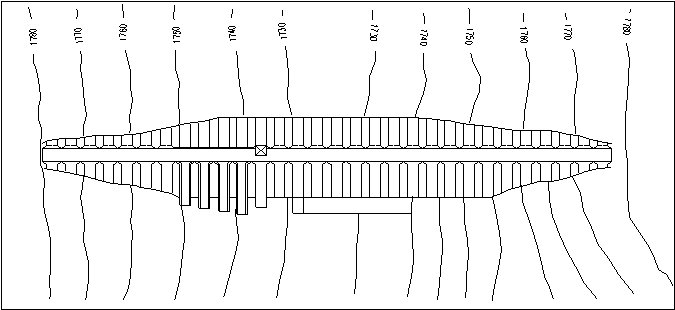
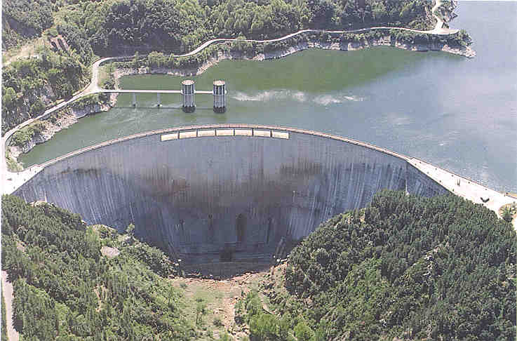
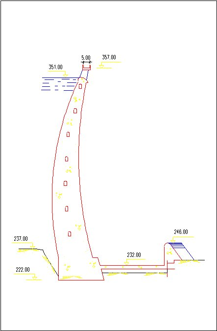
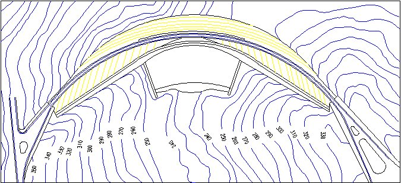

Fonts d’energia convencionals. Centrals hidràuliques#
Pàgina en desenvolupament
Encara estem treballant en aquest document.
Esperem oferir-vos properament el seu contingut.
Disculpeu les molèsties.
Per ara podeu consultar el meu llibre en PDF Llibre CC Tecnologia Industrial I. Producció d’energia elèctrica
. Fins fa poques dècades la major part de l’electricitat es produïa en un reduït tipus de centrals. No es tenia consciència de l’impacte ecològic de de les fonts d’energia utilitzades, com ara els combustibles fòssils o nuclears de fissió. Com veurem, van aparèixer problemes greus: boires fotoquímiques, pluja àcida, efecte hivernacle …
Primer començarem estudiant aquestes fonts d’energia i les centrals que s’utilitzen pel seu aprofitament
Centrals hidràuliques#
Aquestes centrals fan servir l’energia cinètica de l’aigua en moviment per fer girar una turbina acoblada a un alternador, que generarà l’energia elèctrica desitjada. Moltes vegades s’aconsegueix un increment de l’energia cinètica emmagatzemant l’aigua amb una pressa, de forma que l’energia potencial de l’aigua es converteix en energia cinètica per les canonades per on baixa. Altres vegades es fa una captura d’aigua a un nivell superior del riu, de forma que baixa de forma moderada per un canal fins arribar a una cota inferior del riu, incrementant el salt d’aigua just abans de la central.

Veiem el diagrama energètic d’aquestes centrals:

Penseu que en cada una d’aquestes conversions hi ha un rendiment inferior a 1: l’aigua s’escalfa lleugerament en baixar per les canonades, la turbina s’escalfa en el seu gir, a l’igual que l’alternador, que a més a més s’escalfa per l’efecte Joule del corrent que produeix a les seves bobines. Hauríem d’afegir també el rendiment del transformador que, com a totes les centrals energètiques distants del lloc de consum, eleva la tensió elèctrica fins a centenars de kV per evitar pèrdues en el seu transport.
Les tecnologies associades al disseny, construcció, manteniment i explotació aquestes centrals són molt diverses. Anem a veure algunes característiques:
La presa#
La presa atura el curs natural d’un riu i permet crear un desnivell a mesura que s’inunda la vall que tanca. Ha de suportar la pressió de l’aigua, que bé donada per l’expressió
\(p = \rho \ g \ h \)
on
\(\rho = 1000 \ kg \ m^{-3}\), densitat de l’aigua
\(g = 9,807 \ m \ s^{-2}\), acceleració gravitacional de la terra
\(h=\) alçada de la presa
Per exemple, el mur de la presa de Susqueda al Ter té una alçada de 129 m. Per tant, el mur de la presa a la seva part inferior ha de suportar una pressió de 1,3 MPa.
Tipus de presa#
Presa de gravetat#
Aquest tipus és el que més material utilitza. Si bé a la part superior els gruix és normal (típicament s’aprofita el mur de la pressa per fer una carretera que uneix els dos extrems de la vall) a mesura que baixem el gruix és fa molt més ample per suportar la pressió de l’aigua acumulada.
Personalment no puc evitar recordar les esglésies romàniques quan veig una d’aquestes preses.
Exemple: Presa de Boadella, al riu Muga:
Capacitat embassament: \(60 hm^3\)
Superfície embassament: \(3,6 km^2\)
Longitud de coronació: \(250 m\)
Alçada des dels fonaments: \(63 m\)

 |
 |
Presa de contraforts#
Utilitza menys material que la presa de gravetat, ja que es reforça amb uns contraforts que distribueixen la càrrega sobre la presa. D’aquesta forma es redueix l’increment del gruix del mur de la pressa a la part inferior.
Personalment me’n recordo de l’església romànica de Sant Joan de Vilamajor i els seu contraforts.
Exemple: Presa de Cavallers al riu Noguera de Tort:
Capacitat embassament: \(16 hm^3\)
Superfície embassament: \(0,47 km^2\)
Longitud de coronació: \(360 m\)
Alçada des dels fonaments: \(70 m\)

 |
 |
Presa de volta#
És la que menys material utilitza, aprofitant la distribució de forces a l’arc de la presa. Naturalment, com la força de la pressió de la presa es concentra en els extrems de l’arc, aquests han de estar ben apuntalats.
Personalment la bellesa i esveltesa d’aquestes preses em recorden les catedrals gòtiques i modernistes.
Exemple: Presa de Susqueda al riu Ter:
Capacitat embassament: \(233 hm^3\)
Superfície embassament: \(4,6 km^2\)
Longitud de coronació: \(501 m\)
Alçada des dels fonaments: \(135 m\)

 |
 |
Tipus de turbina#
La turbina fa la conversió d’energia cinètica a energia de rotació.
N’hi ha diferents tipus. Les més utilitzades són les turbines Pelton, Francis i Kaplan.
Cal escollir el tipus de turbina segons el salt i el cabal de la central. Això permet treballar amb una turbina amb un rendiment superior al 90 %.
\(P = \eta \ p \ q = \eta \ \rho g h \ q\)

Turbina Pelton#
Optimitzada per grans salts d’aigua i petits o mitjans cabals.
Molt utilitzada a les centrals del Pirineu.
Turbina d’acció: l’aigua s’aplica sobre ella directament i la fa moure. Eix de gir horitzontal.
Els àleps tenen un perfil en forma de cullera doble.
Els injectors dirigeixen l’aigua a alta pressió sobre els àleps. Porten una agulla interior que permet controlar el cabal.
Les centrals reben l’aigua des d’unes canonades llargues, fins-i-tot de kilòmetres, que podem observar fàcilment a les nostres muntanyes.


Turbina Francis#
Optimitzada per salts no molt grans i cabals importants.
Turbina de reacció: l’aigua circula a través d’ella i la fa moure. Eix de gir vertical.
El rotor, amb àleps corbats, rep l’aigua de la part fixa, que porta unes guies corbades (deflectors). La inclinació dels deflectors és regulable i permet ajustar el cabal.


Turbina Kaplan#
Optimitzada per petits salts i grans cabals.
Molt utilitzada a embassaments
Turbina de reacció: l’aigua circula a través d’ella i la fa moure. Eix de gir vertical.
La inclinació dels deflectors i dels àleps del rotor és regulable i permet ajustar el cabal.
També es poden fabricar microturbines amb aquest disseny, operatives amb només 0,3 m de salt, molt útils a centrals fluents.
També s’estan utilitzant aquestes turbines a les costes marines, aprofitant la força de les onades.
.svg)

Centrals de bombeig#
Les centrals de bombeig, bombament o reversibles utilitzen dos embassaments, de forma que l’aigua que surt de la turbina torna a ser emmagatzemada.
Les turbines són reversibles: poden funcionar també com a bombes hidràuliques (els alternadors actuen com a motors).
D’aquesta forma la central pot funcionar com un gran magatzem d’energia. Quan la xarxa global produeix més energia que la demanda, s’emmagatzema en forma d’energia potencial a l’embassament superior. Quan es necessita més energia a la xarxa que la que es produeix aquesta energia emmagatzemada s’allibera.
Aquest tipus de central poden ser claus en un model sostenible dominat per la utilització d’energies alternatives com l’eòlica o solar, que si bé són netes el seu subministrament depèn de les condicions del moment: sol, vent …
A Sallent / Estany Gento tenim un exemple d’aquest tipus de central.
Impacte ambiental#
Si bé les centrals hidràuliques es consideren en un model sostenible de la generació d’energia, no podem menystenir el seu impacte ambiental:
L’embassament d’aigua a les preses canvia el clima localment: canvis en la vegetació (més humitat afavoreix altres espècies), inversió tèrmica… Fins-i-tot l’embassament d’un volum d’aigua excessiu o en un entorn desfavorable pot ser contraproduent, com és el cas de la presa d’Assuan. També suposa un obstacle per a animals en el seu cicle reproductiu (aïllament que impedeix la trobada de mamífers en l’època de cel, salts d’altura insalvables per espècies com el salmó que tornen al seu lloc de naixement a l’aigua dolça de del mar per desovar …). A més a més la presa representa un obstacle pel transit dels sediments produïts per l’erosió i impedeix la regeneració dels deltes dels rius, per exemple.
El desviament d’aigua d’un riu mitjançant un canal per aconseguir concentrar el salt d’aigua a prop de la central ha de respectar la reserva d’un cabal ecològic que mantingui l’ecosistema al segment del riu evitat.
La construcció de la central, dels materials amb que està feta, té una petjada ecològica pròpia.
Per altra banda no podem oblidar els beneficis, més enllà de la producció d’energia neta, que obtenim, especialment el control del flux del riu, que evita inundacions i sequeres, catàstrofes naturals que avui en dia quasi hem oblidat.
Flexibilitat de les central hidràuliques#
Les centrals hidràuliques tenen una característica molt especial: es poden aturar i posar en marxa en qüestió de segons. Si, a més a més, el disseny de la central té una combinació de turbines intel·ligent, típicament dos turbines una amb ⅓ de la potència de la central i l’altra amb ⅔ d’aquest valor, podem ràpidament canviar la producció de la central entre 0, ⅓, ⅔ o el 100 % de la seva potència, flexibilitat que ens permet acomodar la producció de la xarxa a la demanda en aquell moment.